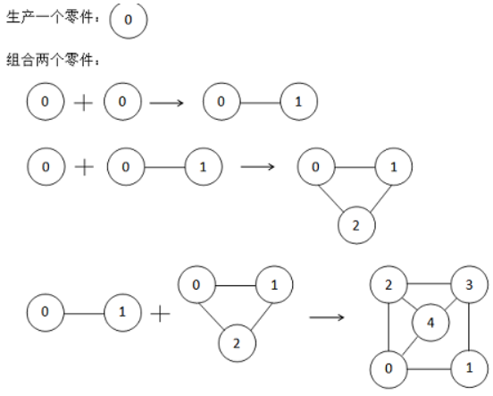
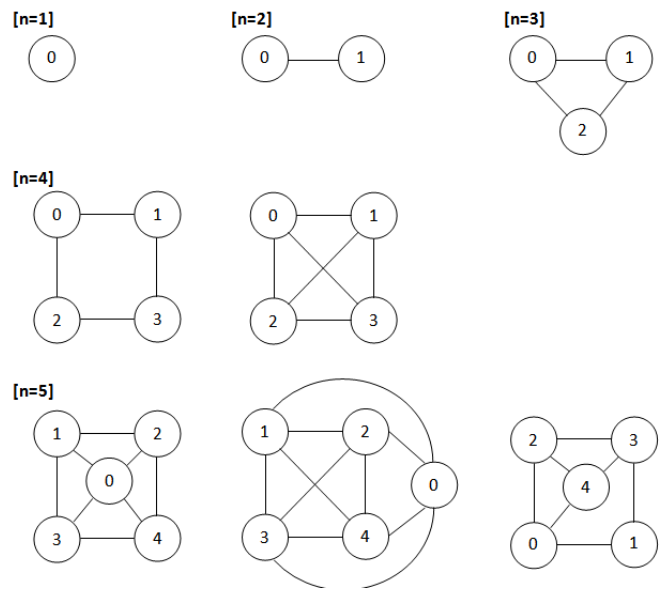

曾经发明了激光发生器的发明家 SHTSC 又公开了他的新发明：零件组装机——一种可以生产并组装零件的神秘装置。
一个零件是一张顶点由 $0$ 到 $n - 1$ 标号的无向图，零件组装机有以下两种功能：

现在 SHTSC 正在思考，对于一个给定的零件，能否由零件组装机生产组装得到。注意：零件是带标号的，这意味着两个零件即使仅有标号不同也被视为不同的零件。为了帮助你理解问题，SHTSC 特地给了你顶点数 $\leq 5$ 的所有零件的图例。

第一行一个整数 $t$，表示有 $t$ 组数据。
每组数据的第一行有两个整数 $n$，$m$，表示某个带标号的无向图有 $n$ 个从 $0$ 到 $n - 1$ 标号的顶点，以及 $m$ 条边。
接下来 $m$ 行，每行两个整数 $u, v$，表示一条从 $u$ 到 $v$ 的无向边。
对于每组数据，输出一行。如果这个无向图可以被零件制造机制造，输出YES，否则输出NO。
YES
NO
3 1 0 2 0 4 6 0 1 0 2 1 2 1 3 2 3 3 0
YES NO YES
【样例解释】
第一组数据：生产出的零件直接满足条件。
第二组数据：为了产生两个点的零件，必然会发生一次组合操作，而组合操作必然会在两个点之间连边，故不能生产出给定的零件。
第三组数据：对应 $n = 4$ 的第二个图例。
【数据规模与约定】
对于 $5\%$ 的数据，图给定的图联通且 $m = n - 1$；
对于另 $15\%$ 的数据，$n \leq 5$；
对于 $50\%$ 的数据，$n \leq 1000$；
对于所有测试点，$t \leq 10$，$n, m \leq 100000$。
 Comet OJ
Comet OJ